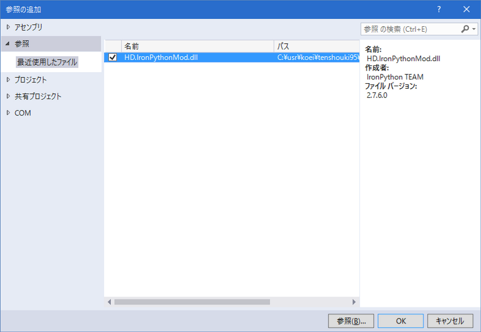

ここでは、C#からIronPythonを利用する例を記載しています。
最終的な目的は、IronPythonをUser.veresion.SDKから利用することにありますが、
まずは、雰囲気を理解するため、IronPythonとC#の連携がいかに自然で強力であるか見てみましょう。
適当にC#のコンソールアプリケーションを作成してみましょう。
.NET FrameWorkのバージョンは、HD.veresion.SDKと合わせて4.6としておきましょう。
HD.IronPythonMod.dllを参照に加えてください。
合体DLLですので、他のネット上のIronPythonに関する記事とは異なり、「これ１つの参照を追加するだけでOK」です。

スクリプト側となるPython側のソースも用意します。
Pythonは「空白やインデント」も文法に含まれますので、注意してください。
C#から呼ばれますので、「script1.pyのソースコードの文字コードをutf8」で保存してください。
(テキストエディタなどで実際に確認してください。間違っているとSyntax Errorが出ます)
C#にあるdynamicは強力です。
C#とIronPythonは、「ほぼシームレス」といって良いレベルで
「関数」を実行できています。
dynamicの力が発揮されています。
PythonのクラスのC#にてインスタンスを生成し、そのインスタンスのメソッドにアクセスできます。
このようにC#側のオブジェクトをそのままIronPythonに渡してもかまいません。